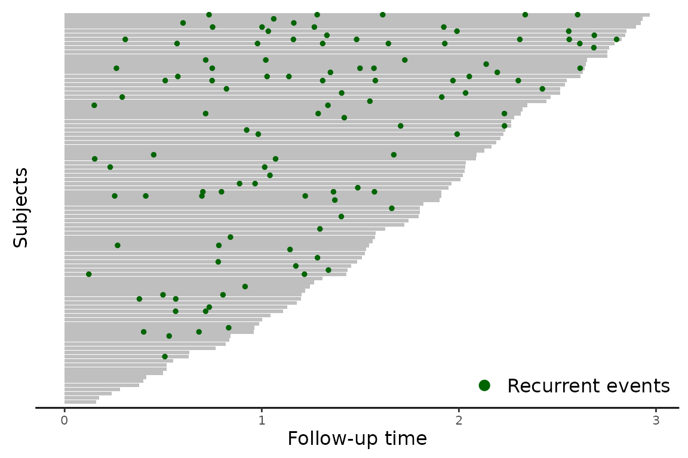

vignettes/funsurv-AR1_FRAILTY.Rmd
funsurv-AR1_FRAILTY.RmdIn this vignette, we aim to demonstrate how to use our package to jointly analyze longitudinal and recurrent event data using functional regression approach with autoregressive frailty.
Let \(T_{ij}\) denote the time of the \(j\)th event for subject \(i\), and let \(C_i\) represent the censoring time. The observed event time, accounting for right censoring, is \(\tilde{T}_{ij}=\min(T_{ij}, C_i)\), and \(\delta_{ij}=I(T_{ij}\leq C_i)\) serves as an indicator of whether the \(j\)th event for subject \(i\) is observed. Building on the survival analysis framework with time-dependent, correlated frailty introduced by Yau and McGilchrist (1998), the hazard function is specified as \[\begin{equation}\label{hazardFunction} \begin{aligned} h(t; \boldsymbol{Z}_i, {X}_i(\cdot))=h_{0}(t-t_{i,j-1}) \exp \left(\eta_{ij}\right), \end{aligned} \end{equation}\] where \(h_0(\cdot)\) is the baseline hazard function, and \(\eta_{ij} = \boldsymbol{\alpha}^{\top}\boldsymbol{Z}_i +\int_{t_{i, j-1}}^{t}{X}_{i}(s)\beta(s)ds + v_{ij}\). Here, \(t_{i, j-1}\) is the previous event time with \(t_{i0} = 0\). \(\boldsymbol{\alpha}\) is the fixed effect parameter associated with the time-invariant covariates \(\boldsymbol{Z}_i\), and \(\beta(t)\) is a time-varying coefficient that captures the effect of functional predictor \({X}_{i}(t)\) on the hazard rate of recurrent events.
Suppose we have collected data on both longitudinal measurements and recurrent event outcomes. The sdat dataset contains information on recurrent event outcomes, including the event start time (t_start), event end time (t_stop), censoring time (censoring_time), event status (status), and a scalar covariate (z1).
data("simDat")
head(sdat)
#> id event t_start t_stop censoring_time status z1
#> 1 1 1 0.000000 0.231175 2.031394 1 0
#> 2 1 2 0.231175 1.014917 2.031394 1 0
#> 3 1 3 1.014917 2.031394 2.031394 0 0
#> 4 2 1 0.000000 0.398999 0.398999 0 1
#> 13 3 1 0.000000 1.418417 2.281943 1 1
#> 11 3 2 1.418417 2.281943 2.281943 0 1The fdat contains longitudinal measurements (x), recorded at multiple time points (time), for each subject (id)
head(fdat)
#> id time x
#> 1 1 0.2 -1.638517
#> 2 1 0.4 -1.677114
#> 3 1 0.6 -1.280659
#> 4 1 0.9 -1.225097
#> 5 1 1.0 -1.534405
#> 6 1 1.2 -1.697173We use the plotEvents function in reReg package (Chiou et al. (2023)) to create a recurrent event plot. The horizontal axis represents the subjects’ follow-up time, while the vertical axis represents individuals, sorted by the follow-up duration. Each green dot indicates a recurrent event.
reReg::plotEvents(with(sdat, Recur(t_stop, id, status)), xlab="Follow-up time", ylab="Subjects", cex=1,recurrent.color="darkgreen", control=list(alpha = 0.8, base_size=8))
The AR1_FRIALTY model employs a two-step procedure to fit the joint model. First, we apply the functional principal component analysis (FPCA) for the longitudinal outcome and obtain the event-specific FPC scores. The calculation of event-specific FPC scores involves 1) calculate the overall FPC scores using PACE function in the MFPCA package (Happ and Greven (2018)); 2) incorporate the overall FPC scores to obtain the event-specific FPC scores. The results of the first step is a data frame of 3 columns of FPC scores, where each column is associated with a leading functional principal component.
In the second step, the obtained scores are incorporated into a dynamic recurrent frailty model with an autoregressive structure to account for within-subject correlations across recurrent events.
args(AR1_FRAILTY)
#> function (formula, sdat, fdat, para0 = c(0.5, 0.5), nbasis = 10,
#> pve = 0.9, npc = NULL, makePD = FALSE, cov.weight.type = c("none",
#> "counts"), iter.max = 50, eps = 1e-06)
#> NULLformula A formula, with the response on the left of a ~ operator being a Recur object as returned by function Recur in reda, and scalar covariates on the right.sdat is a data frame containing information of recurrent event outcomes.fdat is data frame containing longitudinal measurements.para0 A vector of initial values for \(\theta^2\) and auto-regressive coefficient \(\rho\). Both defaults to 0.5.nbasis is an integer specifying the number of B-spline basis functions used for estimating the mean function and performing bivariate smoothing of the covariance surface (see fpca.sc in the refund package Crainiceanu et al. (2013)).pve is numerical value between 0 and 1, representing the proportion of variance explained used to choose the number of functional principal components. Defaults to 0.9.npc is an integer specifying the number of functional principal components.makePDis boolean value for should positive definiteness be enforced for the covariance surface estimate? (cf. fpca.sc in refund Crainiceanu et al. (2013)).cov.weight.type defines the type of weighting used for the smooth covariance estimate. Defaults to “none”, i.e. no weighting. Alternatively, “counts” (corresponds to fpca.sc in refund Crainiceanu et al. (2013)) weights the pointwise estimates of the covariance function by the number of observation points.iter.max Maximum number of iterations for both inner iteration and outer iteration.eps Tolerance criteria for a possible infinite coefficient value.We set the percentage of variance explained to 90% to determine a finite number of FPC components, resulting in three FPC components
fit <- AR1_FRAILTY(formula=Recur(t_start %to% t_stop, id, status) ~ z1, sdat=sdat, fdat=fdat, nbasis=10, pve=0.9)
summary(fit)
#> Call:
#> AR1_FRAILTY(formula = Recur(t_start %to% t_stop, id, status) ~
#> z1, sdat = sdat, fdat = fdat, nbasis = 10, pve = 0.9)
#>
#> Coefficients:
#> Estimate SE p-value
#> z1 -2.78199 0.4095 1.098e-11 ***
#> score1 -0.16928 0.2201 0.4419
#> score2 -0.16854 0.2767 0.5425
#> score3 0.26826 0.4385 0.5407
#>
#> Variance component and auto-regressive coefficient:
#> Estimate SE p-value
#> theta2 0.36410 0.2588 0.159441
#> rho 0.70569 0.2190 0.001269 **
#> ---
#> Signif. codes: 0 '***' 0.001 '**' 0.01 '*' 0.05 '.' 0.1 ' ' 1The functional coefficient \(\beta(t)\) can be plotted via plot():
plot(fit, which="beta")The plot below shows the estimated baseline survival probability.
plot(fit, which="basesurv")The plot below demonstrates the three functional principal components estimated from longitudinal measurements.
plot(fit, which="fpc")Chiou, Sy Han, Gongjun Xu, Jun Yan, and Chiung-Yu Huang. 2023. “Regression Modeling for Recurrent Events Possibly with an Informative Terminal Event Using R Package reReg.” Journal of Statistical Software 105: 1–34.
Crainiceanu, Ciprian, Philip Reiss, Jeff Goldsmith, Maintainer Lei Huang, Lan Huo, Fabian Scheipl, and Bruce Swihart. 2013. “Package ‘Refund’.” Citeseer.
Happ, Clara, and Sonja Greven. 2018. “Multivariate Functional Principal Component Analysis for Data Observed on Different (Dimensional) Domains.” Journal of the American Statistical Association 113 (522): 649–59. https://doi.org/10.1080/01621459.2016.1273115.
Yau, KKW, and CA McGilchrist. 1998. “ML and Reml Estimation in Survival Analysis with Time Dependent Correlated Frailty.” Statistics in Medicine 17 (11): 1201–13.